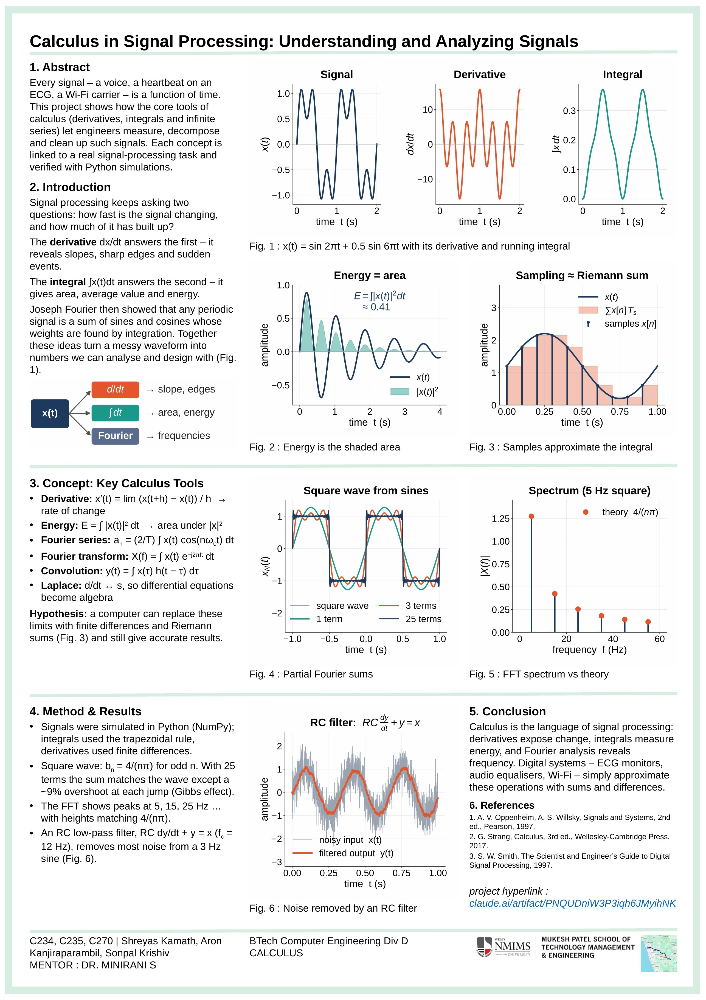

Calculus in Signal Processing: Understanding and Analyzing Signals
Team: C234 Shreyas Kamath · C235 Aron Kanjiraparambil · C270 Sonpal Krishiv
Course: BTech Computer Engineering, Div D · Calculus
Mentor: Dr. Minirani S
Mukesh Patel School of Technology Management & Engineering, SVKM's NMIMS

A1 poster (594 × 841 mm). Open full size · Download PDF